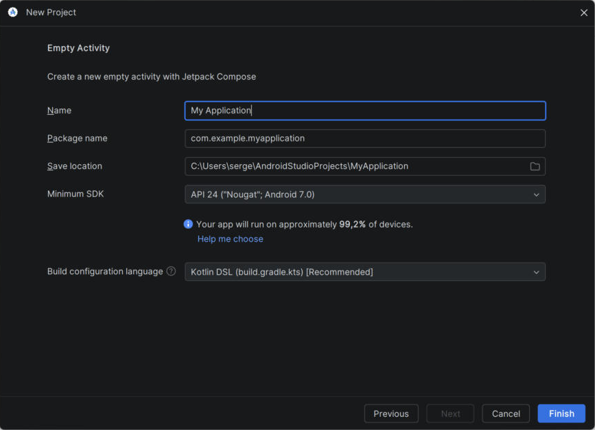
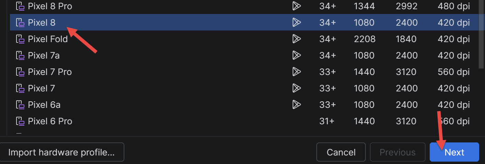

2. Capítulo 1 - Configuración del entorno de trabajo
2.1. Instalación de las herramientas
- Node.js: descargue e instale la versión 22 (o posterior) desde nodejs.org. Verifique la instalación en una terminal con los comandos [node --version] y [npm --version]. Node.js solo es útil para el servidor [NestJS].
- [MySQL] 8: se instala en el capítulo 2 con la herramienta Laragon, que también incluye la herramienta de administración HeidiSQL.
- Postman: se puede descargar gratis en postman.com; se usa para probar el servidor en el capítulo 2.
- Visual Studio Code: opcional, para ver el código del servidor [NestJS].
Para el cliente, solo se necesita una herramienta: [Android Studio]. No es necesario instalar un JDK (Java Development Kit) por separado: Android Studio incluye uno propio, el JetBrains Runtime ([JBR]), que se utiliza para ejecutar [Gradle], la herramienta de compilación de proyectos Android. Tampoco hace falta instalar el compilador de Kotlin: es un complemento de Gradle que se descarga automáticamente la primera vez que se compila el proyecto.
2.1.1. Android Studio y el SDK de Android
[Android Studio] se puede descargar gratis en [https://developer.android.com/studio]. Al iniciarlo por primera vez, el asistente ofrece una instalación estándar: acéptela. Luego descargará el SDK de Android (las bibliotecas de la plataforma, las herramientas de compilación y el emulador).

Este documento se probó con Android Studio Quail 4 (2026.1.4). La pantalla de inicio da acceso, mediante el enlace [More Actions], a [SDK Manager] y a [Virtual Device Manager], que se utilizan más adelante:

- [SDK Manager] instala y actualiza los componentes del SDK de Android. Pestaña [SDK Platforms]: verifique que haya instalada una plataforma Android reciente; el proyecto de este documento se compila para la API 37 (Android 17). Si falta, Gradle la descargará automáticamente durante la primera compilación;
- pestaña [SDK Tools]: verifique que estén marcados [Android SDK Build-Tools], [Android SDK Platform-Tools] (que contiene la herramienta [adb]) y [Android Emulator].

El SDK se instala de forma predeterminada en la carpeta [%LOCALAPPDATA%\Android\Sdk] (en Windows). Dos de sus subcarpetas contienen herramientas de línea de comandos que se utilizan en este documento: [platform-tools] (la herramienta [adb], que controla un teléfono o un emulador desde la computadora) y [emulator]. Puede agregar estas dos carpetas a la variable [PATH] del sistema para poder escribir simplemente [adb] en una terminal.
2.2. Creación de un proyecto Android con Android Studio
El código del cliente se incluye con este documento (carpeta [rdvmedecins-kotlin-client]). Se creó a partir de la plantilla de proyecto [Empty Activity] de Android Studio y luego se amplió. Veamos primero cómo se crea este proyecto inicial: es el equivalente del comando [flutter create] del curso de Flutter. En la pantalla de inicio de Android Studio, haga clic en [New Project]:

- En la categoría [Phone and large screens], seleccione la plantilla [Empty Activity]. Es la plantilla “Jetpack Compose”: una aplicación de una sola pantalla cuya interfaz se define en Kotlin. En cambio, la plantilla [Empty Views Activity] utiliza el sistema de vistas anterior, descrito en XML, que este documento no usa;
- haga clic en [Next].

- [Name]: el nombre de la aplicación, que se muestra debajo de su ícono en el teléfono. Para este documento: [RdvMedecins];
- [Package name]: el identificador único de la aplicación, con la forma de un nombre de dominio invertido. Para este documento: [fr.rdvmedecins.client]. Es también el paquete Kotlin base del código fuente;
- [Save location]: la carpeta del proyecto;
- [Minimum SDK]: la versión más antigua de Android compatible. El cliente de este documento requiere la API 26 (Android 8.0), que cubre casi todos los teléfonos en uso;
- [Build configuration language]: el lenguaje de los archivos de configuración de Gradle. [Kotlin DSL (build.gradle.kts)] es la opción recomendada: la configuración de la compilación también se escribe en Kotlin;
- [Finish] crea el proyecto. Android Studio inicia entonces una primera “sincronización de Gradle”: descarga el propio Gradle, el complemento de Android, el compilador de Kotlin y las bibliotecas declaradas por el proyecto. Esto puede tardar varios minutos la primera vez.
El proyecto creado tiene la siguiente estructura de directorios (los archivos que el lector de este documento ha modificado o agregado se tratan en el capítulo 4):
[Gradle] cumple aquí el mismo papel que [npm] en un proyecto Node.js o que [flutter]/[pub] en el proyecto Flutter: descarga las dependencias, compila el código y produce la aplicación instalable, un archivo .apk. Los scripts [gradlew] (Linux, macOS) y [gradlew.bat] (Windows), el “wrapper” de Gradle, descargan según se necesite la versión exacta de Gradle que requiere el proyecto (especificada en [gradle/wrapper/gradle-wrapper.properties]): no se requiere ninguna instalación global de Gradle.
2.3. Apertura del proyecto cliente
Si descargó el código de este documento, el cliente se encuentra en la carpeta [rdvmedecins-kotlin-client]. Para abrirlo: en la pantalla de inicio de Android Studio, haga clic en el botón [Open] y luego seleccione esa carpeta (la que contiene [settings.gradle.kts]). Android Studio iniciará la sincronización de Gradle descrita anteriormente. El proyecto aparecerá entonces en la vista [Project] (a la izquierda); la vista [Android], que es la predeterminada, agrupa los archivos por tipo (manifests, Kotlin+Java, assets, res) en lugar de por carpeta.
El proyecto también se puede compilar sin abrir Android Studio, mediante la línea de comandos. En una terminal abierta en la carpeta [rdvmedecins-kotlin-client]:
- la primera línea (PowerShell) indica a Gradle qué JDK usar: el de Android Studio. Esto es innecesario si la variable [JAVA_HOME] ya está definida en la máquina;
- la segunda línea ejecuta la tarea de Gradle [assembleDebug], que compila el proyecto y produce una aplicación “debug” que se puede instalar en un emulador o en un teléfono.
Durante la primera compilación, Gradle descarga todo lo que necesita y luego muestra la lista de tareas que ejecuta:
- [compileDebugKotlin]: compilación del código Kotlin a bytecode de Java;
- [dexBuilderDebug]: conversión de este bytecode al formato DEX, el formato que ejecuta la máquina virtual de Android ([ART], Android Runtime);
- [packageDebug]: ensamblado del archivo [app/build/outputs/apk/debug/app-debug.apk], la aplicación instalable.
2.4. Configuración de un emulador de Android
Si no tiene un teléfono, puede probar la aplicación en un emulador de Android: un teléfono virtual que se ejecuta en una ventana de su computadora. Esta sección es la misma que la del curso de Flutter.
[Prerequisites]: la virtualización debe estar habilitada en el [BIOS] de la computadora y, en Windows, debe estar marcada la característica [Windows Hypervisor Platform] ([Control Panel / Programs / Turn Windows features on or off]), lo que requiere un reinicio. De lo contrario, el emulador no se iniciará o se ejecutará muy lentamente.
Abra el [Device Manager] en Android Studio: [More Actions / Virtual Device Manager] desde la pantalla de inicio, o [Tools / Device Manager] cuando hay un proyecto abierto.

Haga clic en [Create Device], seleccione un modelo (por ejemplo, [Pixel 8]) y luego [Next]. Seleccione una imagen de sistema Android reciente para el procesador [x86_64] y descárguela con el enlace [Download] que se encuentra a su lado; luego [Next] y [Finish].


Inicie el emulador con el botón [Play] del [Device Manager]:

También puede iniciarlo desde una terminal. El primer comando muestra la lista de los emuladores creados; el segundo inicia uno de ellos:
Espere a que aparezca la pantalla de inicio de Android en la ventana del emulador (el primer inicio puede tardar varios minutos) y luego verifique que la herramienta [adb] lo detecte:
[Note]: si [adb devices] muestra [offline] en lugar de [device], el emulador no ha terminado de iniciarse o [adb] está en un estado inconsistente. Espere a que aparezca la pantalla de bienvenida y, si es necesario, reinicie [adb] con los comandos [adb kill-server] y luego [adb start-server]. Si el problema persiste, use [where.exe adb] para verificar que no haya en el [PATH] ningún otro [adb] de otra versión (por ejemplo, el de un SDK anterior).
2.4.1. Preparación del teléfono Android
Para ejecutar la aplicación en un teléfono Android real, el teléfono debe estar configurado para permitir el control desde la computadora:
- habilite las opciones de desarrollador: abra [Settings / About phone] y luego toque varias veces [Build number] (normalmente 7) hasta que el teléfono indique que usted es desarrollador. Los nombres exactos varían según el fabricante;
- habilite [USB debugging] en el menú [Developer options] (agregado en el paso anterior);
- conecte el teléfono a la computadora con un cable USB que transfiera datos (no uno que solo cargue el teléfono) y acepte en el teléfono la solicitud de autorización de depuración USB. En Windows, si el teléfono no se reconoce, instale el controlador USB del fabricante (“OEM USB drivers”, véase [https://developer.android.com/studio/run/oem-usb]);
- verifique que el teléfono aparezca en la lista que muestra [adb devices].
El teléfono accederá al servidor [NestJS] ya sea mediante la dirección IP de la computadora en la red local o mediante el cable USB con el comando [adb reverse]. Estas configuraciones se describen en el capítulo 5.